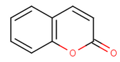

Three methods are provided to convert a molecule from Kekulé form to aromatic form: basic, general, and loose aromaticity detection.
The basic method locates the ring atoms in the molecule connected with single and double bonds. Takes each ring in a ring system separately and sums the number of electrons. If the Hückel's rule holds, then the ring is aromatic.
There are some exceptions, when the double and single bonds are not sequential yet the ring is aromatic. In this case the atom between single bonds has an orbital which takes part in the aromatic system. (Relevant atoms: N, O, P, S, As and Se as they can donate a free electron-pair to the aromatic system and B as it can donate a molecular orbital without additional electron.) Rings of less than 5 atoms are so constrained that they cannot be aromatic.
The general method also locates the ring atoms in the molecule connected with single and double bonds, then it sums the number of electrons in the ring system and if the Hückel's rule is fulfilled, then the ring system is aromatic. In this method the atoms defining the ring system may not form a continuous ring like in benzo[de]chromene (see figure on the below), where all atoms of the molecule are in the ring system generated from the three 6 membered rings.
benzo[de]chromene
Some examples for heteroatoms in aromatic ring systems:
furan
|
pyrrol |
pyridine |

coumarin
The loose method also locates the ring atoms in the molecule connected with single and double bonds, then it sums the number of electrons in the ring system and if the Hückel's rule is fulfilled, then the ring system is aromatic. Only five membered rings, six-membered rings that can be drawn as alternating single and double bonds and the perimeter bonds of azulenes are considered.
The aromatization functions,
aromatize(),
aromatize(boolean a) and
aromatize(int method) are located in
MoleculeGraph class.
While aromatize() uses the default aromatization
method, in aromatize(int method)
the basic (MoleculeGraph.AROM_BASIC),
general (MoleculeGraph.AROM_GENERAL) or
loose (MoleculeGraph.AROM_LOOSE) method can be specified.
Code example: aromatize the molecule with the default aromatization method
molecule.aromatize();
Code example: aromatize the molecule with general aromatization method
molecule.aromatize(MoleculeGraph.AROM_GENERAL);
More information about aromatization can be found here.
|
Aromaticity |
Differences between the basic and general methods |